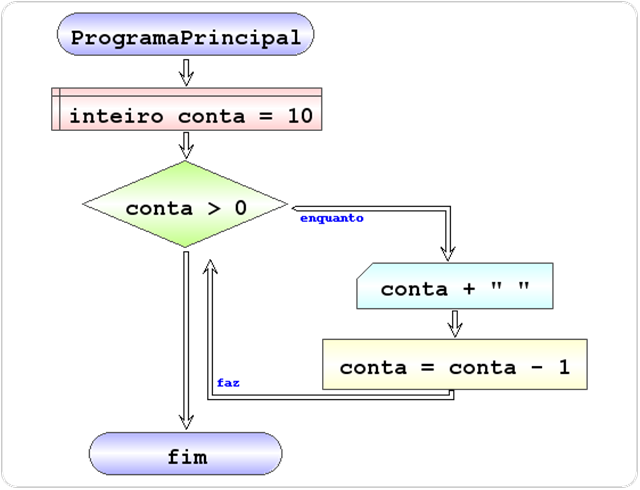
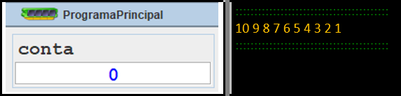

Example – count in descending order
Algorithm that prints in the console the integers between 10 and 1
Fluxogram
Pseudocode

Inicio ProgramaPrincipal
Definir inteiro conta = 10
Enquanto conta > 0 faz
Escrever conta + " "
Executar conta = conta - 1
Fim enquanto
Fim ProgramaPrincipal
Result:
